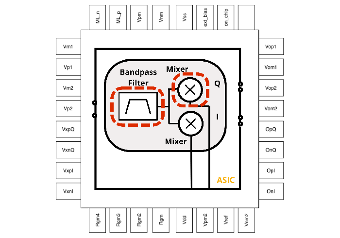

Biomedical integrated circuits · Analog design · 2026
Electrode-skin impedance measurement IC
A low-power analog IC for continuously monitoring electrode–skin impedance mismatch.
RESEARCH SUMMARY
Design overview
The ASIC extracts electrode–skin impedance mismatch from the response to an injected stimulation signal. An active-RC band-pass filter isolates the 1.2 kHz stimulus component; two fully differential multiplier stages provide the in-phase and quadrature demodulation signals. These low-frequency I/Q outputs track changes in electrode contact and provide a physical reference for motion-artifact suppression in the Ear-EEG system. The report describes a top-level design with two multipliers and two fully differential op-amp stages.
SYSTEM ARCHITECTURE & STATUS
From impedance to reference signal.

What the block does
The filtered response is multiplied by in-phase and quadrature references to recover amplitude and phase changes associated with impedance mismatch.
Simulation result
In behavioral-model FFT results, the mismatch output is approximately −37 dB, compared with approximately −108 dB when no mismatch is present.
The report documents the block designs, simulations, and layouts. It lists full ASIC integration and post-fabrication validation as remaining work.
Multiplier design and schematic ↗Fully differential op-amp ↗